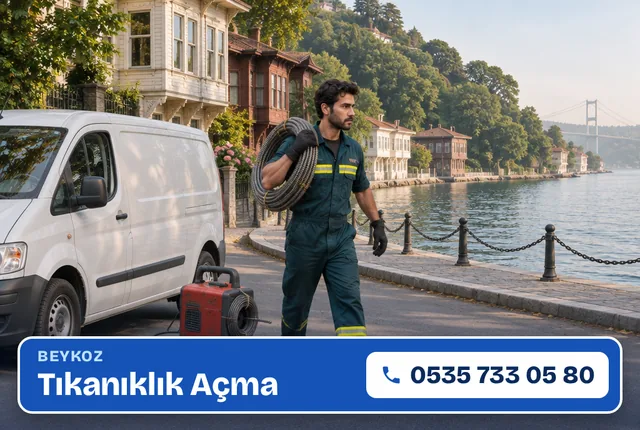
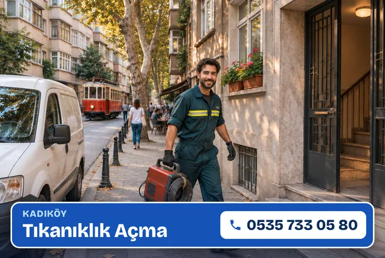
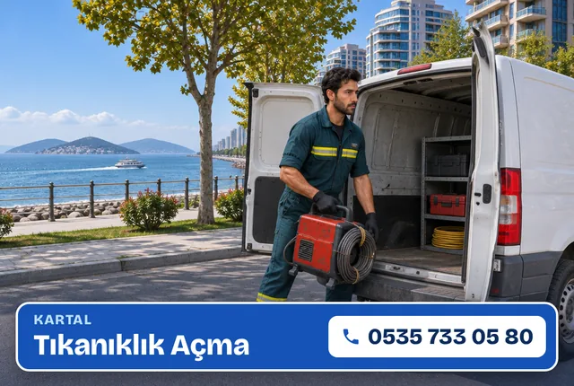
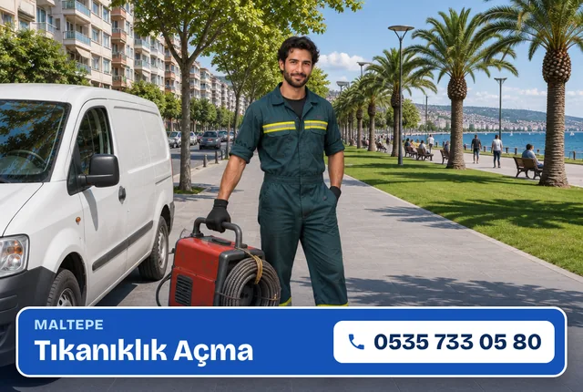
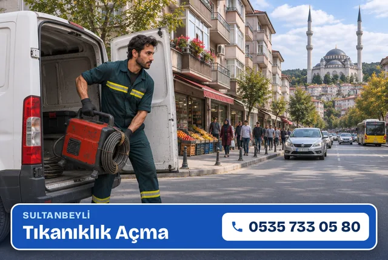
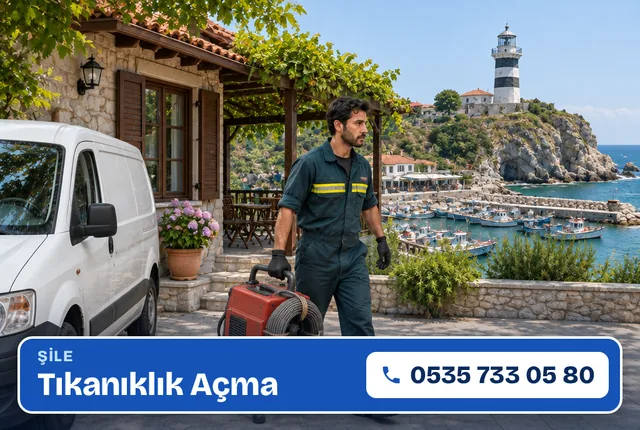

Lavabo tıkanıklığı
Suyu yavaş çeken ya da hiç çekmeyen lavabolarda sifondan başlayıp duvar içindeki hatta kadar ilerliyoruz.
İstanbul Anadolu Yakası · 13 ilçe
Lavabo, mutfak, banyo, tuvalet ya da binanın ana hattı… Su gitmiyorsa arayın. Makinemizle adresinize gelir, tıkanıklığı kırmadan açar, akışı sizinle birlikte deneriz.
Ne yapıyoruz?
Evde, iş yerinde ya da apartmanın ortak hattında; suyun gittiği her yere bakıyoruz.
Suyu yavaş çeken ya da hiç çekmeyen lavabolarda sifondan başlayıp duvar içindeki hatta kadar ilerliyoruz.
Yağ ve yemek artığıyla daralan mutfak hatlarını, birikimi borudan kazıyan uçlarla açıyoruz.
Saç ve sabun kalıntısıyla dolan duş teknesi, küvet ve yer süzgeci hatlarına bakıyoruz.
Klozeti sökmeden, taşa ve seramiğe zarar vermeyen özel uçlarla tıkanıklığı gideriyoruz.
Birden çok gideri aynı anda etkileyen tıkanıklıklarda binanın ana hattını ve rögar bağlantısını açıyoruz.
Tekrarlayan tıkanıklıklarda borunun içine kamerayla bakıp sorunun yerini kırmadan buluyoruz.
Hizmet bölgemiz
Her ilçenin binası, sokağı, tesisatı farklı. İlçenizi seçin; orada nasıl çalıştığımızı ve hangi mahallelere geldiğimizi görün.

Beykoz Tıkanıklık Açma→Çekmeköy Tıkanıklık Açma→
Kadıköy Tıkanıklık Açma→
Kartal Tıkanıklık Açma→
Maltepe Tıkanıklık Açma→Pendik Tıkanıklık Açma→ Sancaktepe Tıkanıklık Açma→
Sancaktepe Tıkanıklık Açma→
Sultanbeyli Tıkanıklık Açma→
Şile Tıkanıklık Açma→ Tuzla Tıkanıklık Açma→Ümraniye Tıkanıklık Açma→
Tuzla Tıkanıklık Açma→Ümraniye Tıkanıklık Açma→ Üsküdar Tıkanıklık Açma→
Üsküdar Tıkanıklık Açma→Dört adımda
Telefonda ilçeyi, adresi ve hangi giderin tıkandığını söyleyin.
Size en yakın ekip, gerekli makineyle adresinize doğru yola çıkar.
Tıkanıklığın yerini bulur, yapılacak işi ve ücreti başlamadan önce söyleriz.
Hattı açar, bol suyla akışı birlikte kontrol ederiz.
Merak edilenler
İstanbul Anadolu Yakası’ndaki 13 ilçenin tamamına geliyoruz: Ataşehir, Beykoz, Çekmeköy, Kadıköy, Kartal, Maltepe, Pendik, Sancaktepe, Sultanbeyli, Şile, Tuzla, Ümraniye, Üsküdar.
Çoğu adrese trafik durumuna göre takribi 40 dakikada ulaşıyoruz. Şile ve Beykoz’un köyleri gibi uzak noktalarda süre uzar; aradığınızda bulunduğumuz yere göre gerçekçi bir saat veriyoruz.
Ücret; tıkanıklığın yerine, hattın uzunluğuna ve kullanılacak yönteme göre değişir. Adreste hattı gördükten sonra yapılacak işi ve ücreti işe başlamadan önce söylüyoruz.
Tıkanıklıkların büyük bölümü spiral makineyle, fayans ya da duvar kırılmadan açılır. Hatta kırık ya da çökme varsa bunu kamerayla gösterir, seçenekleri anlatırız.
Geliriz; yalnız telefonda hangi ürünü ne zaman kullandığınızı söyleyin. Hatta kimyasal varken ekibin ona göre önlem alması gerekir.
Beklemeyin, su taşmadan arayın. Ekibimiz yolda olsun.